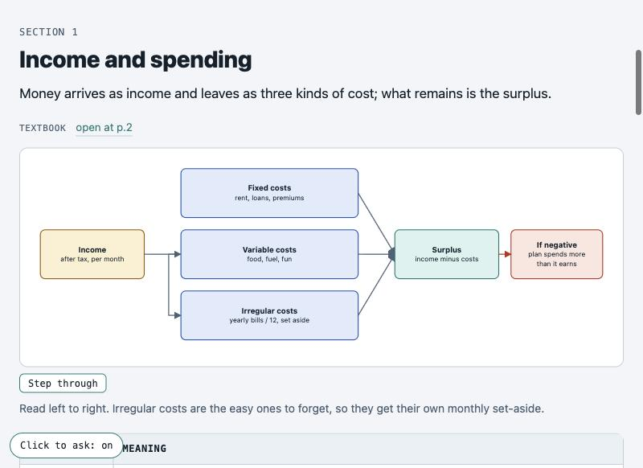
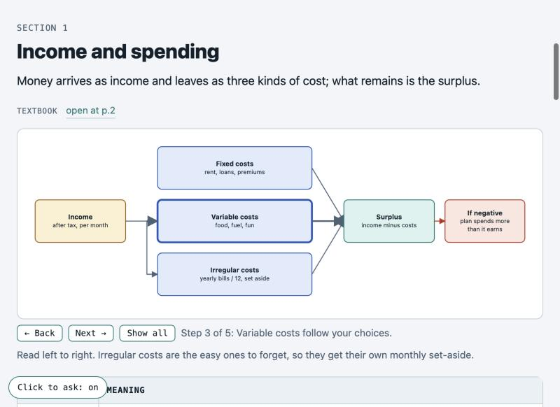
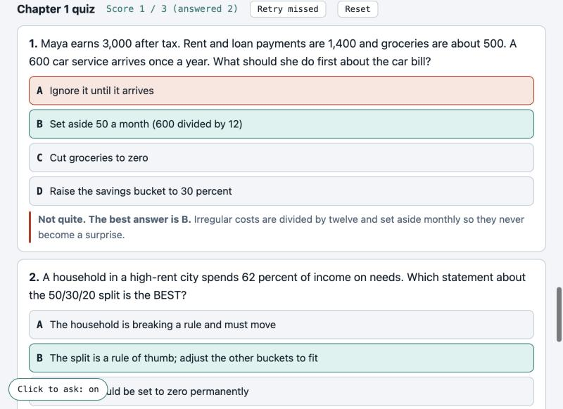
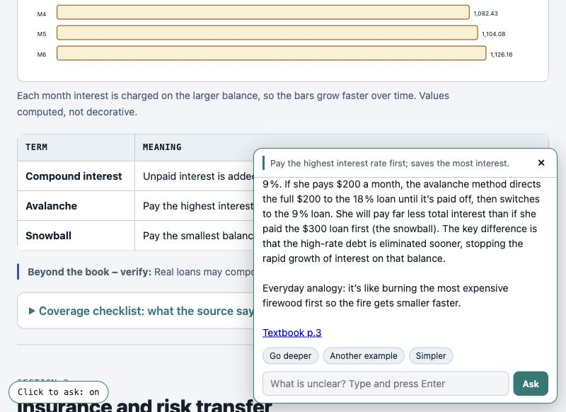
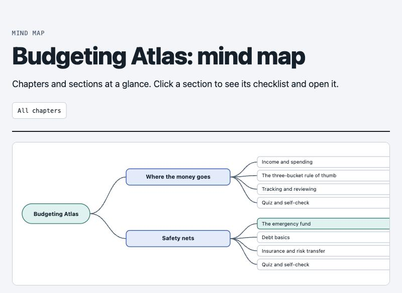

Turn a book, paper, lecture transcript, notes or a code repository into a diagram-first study atlas: one page per chapter, hand-built diagrams, definition tables, a coverage checklist, scored quizzes, flashcards for Anki, a mind map, and an ask box that runs on a model on your own computer and cites the page of your source.
Why it exists, what you need (including Ollama), a full install from scratch with real terminal output, the first run, and every feature of the finished atlas.
The whole video uses a text-to-speech voice. Terminal scenes are real output captured from a clean folder; app scenes are real screen captures of the demo atlas. Open on YouTube ↗
Three problems with studying a long, dense book, and what the atlas does about each.
You finish a chapter and still miss things.
Reading does not show whether you can answer in your test's style.
You leave the page to search and lose the thread.
Everything except the pilot is optional.
One small chapter plus a questionnaire (max 25 questions) before the full build; your answers are frozen as the spec.
Pipelines, loops, architectures and charts drawn to scale; an overflow checker catches spilled labels.
Closes every section; anything outside the source is flagged "Beyond the book: verify".
Exam-style scenarios, plain recall or true/false; instant explanation, score, retry missed.
Click any sentence or diagram box and ask. Runs on Ollama on your machine; answers cite Textbook p.N.
Every section links to the page of your own PDF where it starts, with sub-topic chips.
Definitions, self-checks and quiz items exported as a file Anki imports; Anki handles spaced repetition.
Built from the sections and checklists; click a section to see its checklist.
Flow diagrams can be stepped through one box at a time, with a caption per step.
Screens from the demo atlas, built from an original three-page text about home budgeting. Open the live, read-only copy →





The skill stops after the pilot so you can steer before the full build.
Tested on macOS only.
| Need | Why |
|---|---|
| Claude Code | Runs the skill (installed as a plugin). |
| Python 3.9+ | With openpyxl and pypdf; the skill's scripts use them. |
| Your source | For page links and cited answers it must be a PDF with a text layer, not a scan. |
| A web browser | To read the atlas. |
| Ollama (optional) | Runs the local models behind the ask box. Used here: qwen3.5:9b (6.6 GB, quick), gpt-oss:20b (13 GB, default and deeper), nomic-embed-text (274 MB, embeddings). Set the names in config.json; bigger models answer better but need more memory and are slower. |
Inside Claude Code:
/plugin marketplace add sabya-chow/visual-study-atlas /plugin install visual-study-atlas@visual-study-atlas-marketplace
Packages and the demo:
python3 -m venv .venv && source .venv/bin/activate pip install openpyxl pypdf git clone https://github.com/sabya-chow/visual-study-atlas cd visual-study-atlas/examples/demo/app && python3 server.py # then open http://127.0.0.1:8801
Then run /visual-study-atlas on your own material. Full steps with real output are in the video above and in the README.